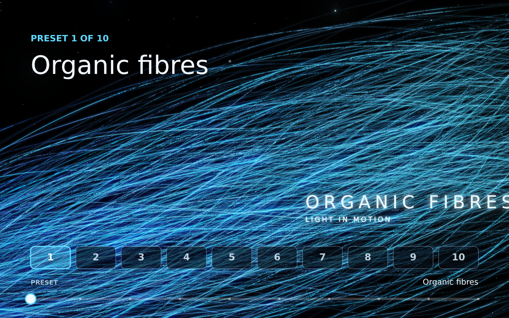
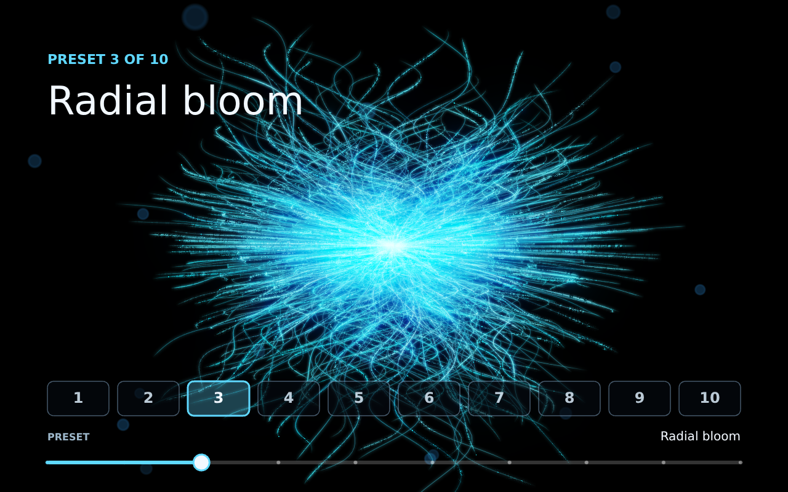
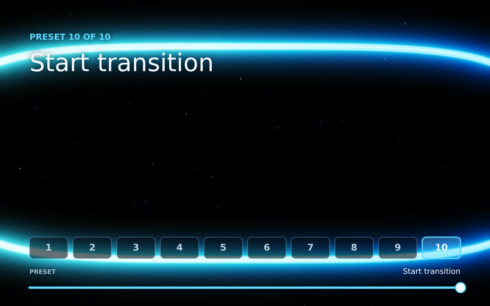
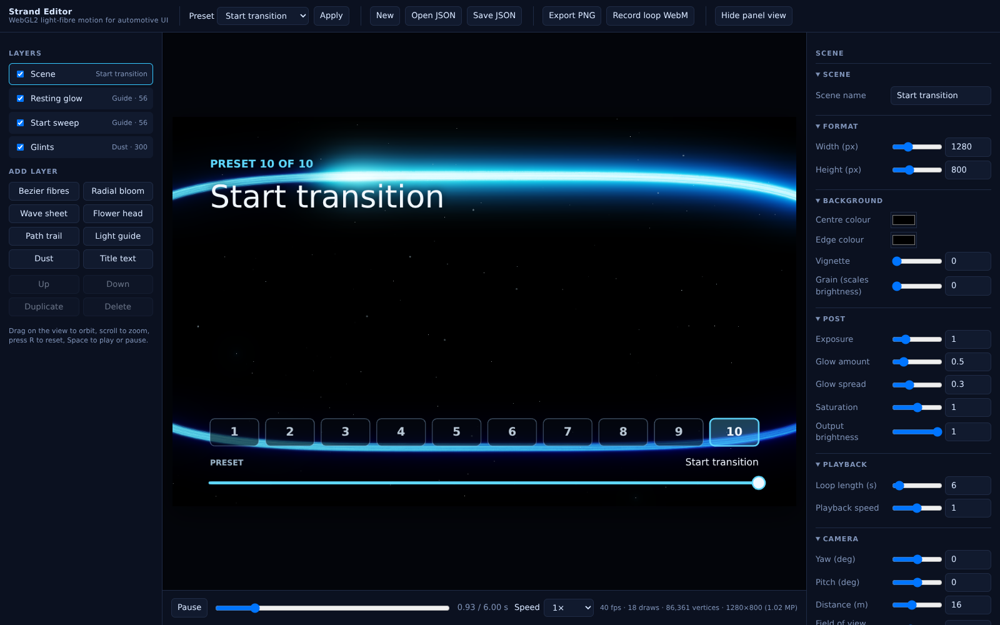

Frames are the PNG export of the editor in Panel view (1280 × 800), read back by npm run panel-proof. Each frame is compared with the same frame rendered without the panel. The panel changes pixels only inside its controls. The full report is in Proof.txt.



